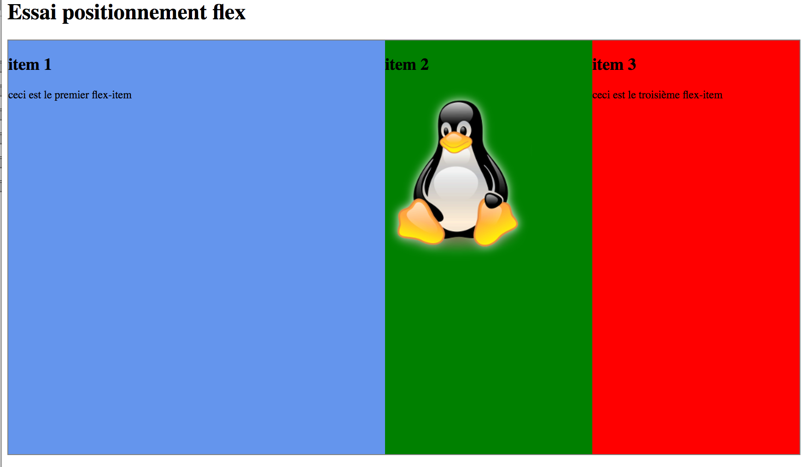
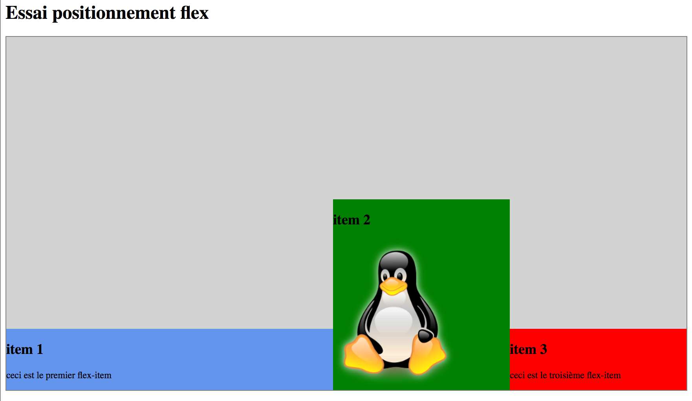
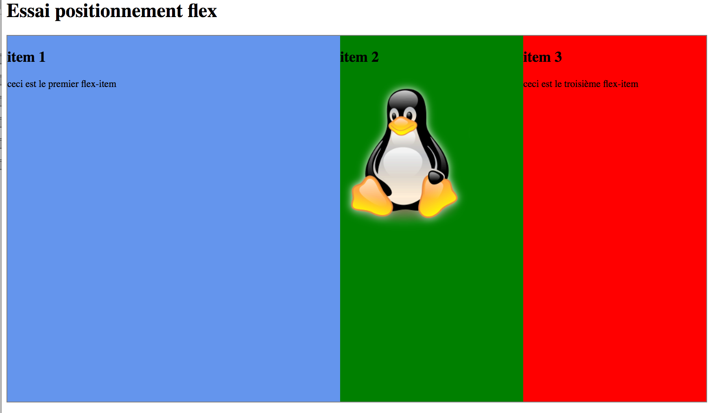
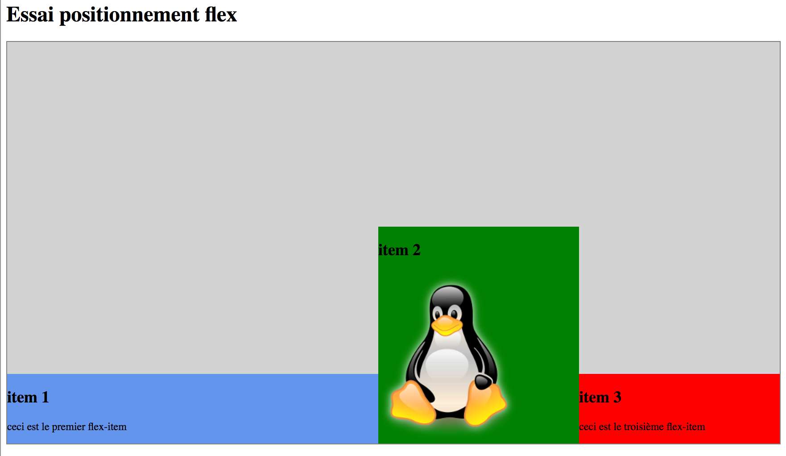

Université de Grenoble Alpes - IUT2 - Département informatique
M1105 - Web
TP 3
Le modèle de boîte classique et le positionnement "inline-block"
Le modèle de boîte flexible et le positionnement "flex"
Objectifs du TP
- Comprendre le modèle de boîte "classique" et le modèle de boîte "flexible"
- Comprendre les modes de positionnement CSS "inline-block" et "flex"
- Appliquer le positionnement "flex" pour la réalisation d'une page fluide "flat design"
Ce document est consultable sur la plateforme Chamilo du département.
Préparation et introduction
- Créer un répertoire TP3 dans votre répertoire M1105
- Se positionner dans ce répertoire TP3
- Recopier dans votre répertoire TP3 le contenu du répertoire /users/info/pub/1a/M1105/tp3
Comme cela a été vu en cours, il y a plusieurs façons de mettre en page un site et donc de positionner les divisions les unes par rapport aux autres.
Les techniques sont variées et ont évolué au cours du temps. Les positionnements "inline-block" et "flex" sont les positionnements actuels qu'il faut savoir maîtriser, même si les autres modes
de positionnement vus en cours peuvent s'avérer utiles dans certains cas.
Le modèle de boîte (modèle classique)
Introduction au modèle de boîte classique
Rappel: tout élément HTML est une « boîte » et possède:
- Un contenu : le texte d’un paragraphe par exemple, ou une autre boîte.
- Une marge interne : padding.
- Une marge externe : margin.
- Une bordure : border.
Dans cette partie nous manipulons le modèle de boîte de CSS avec un exemple très simple. Le fichier page1.html contient 3 blocs (boîtes) imbriqués: html, body et un
paragraphe p.
- Visualisez le contenu de page1.html
- Créez un fichier page1.css et ajoutez une couleur de fond
à body (#303050), et au paragraphe p (#505070). Définissez les caractères de couleur blanche dans le selecteur body. Vous devez obtenir la page ci-dessous.

- Activez l'outil de Développement Web de Firefox (menu Tools / Web Developer / Toggle Tools ), en particulier l'inspecteur (Inspector) pour afficher le modèle de boîtes (Box Model), comme sur la figure ci-dessous.
Cet outil est extrêmement utile et dès que vous faites du développement web vous devez l'activer.
- Pour la boîte p quelle est la largeur (width)? la hauteur (height)? les valeurs des marges intérieures (padding)? des marges extérieures (margin)?
- Vous noterez donc que par défaut, la boîte p a une marge extérieure (margin) haute et basse de 16 pixels.
- Remarquez grâce à l'onglet Rules que la balise p hérite de la couleur des caractères définie dans body.
- Encadrez maintenant d'un trait vert de 2px d'épaisseur la boîte p et mettre une marge intérieure (padding) de 30px (en haut, à droite, en bas, à gauche). Encadrez la boîte body d'un trait rouge de 1px
- Pour la boîte p quelle est la largeur totale? la hauteur totale? (voir le cours pour les définitions de largeur totale et hauteur totale )
- Pour la boîte body y a-t-il des marges intérieures (padding) par défaut? des marges extérieures (margin) par défaut? Notez que la couleur de fond de l'élément body s'étend au delà de sa boîte. C'est une exception.
- Quelle est la taille en pixels de l'espace entre le paragraphe et le haut de la fenêtre ? D'ou vient cette valeur ?
Ajoutez maintenant un autre paragraphe p sous le précédent (ce paragraphe aura les mêmes caractéristiques que l'autre).
Vous devez constater que les marges extérieures (margin) entre les paragraphes ne s'additionnent pas.
- Que s'est-il passé? (voir le cours)
Notez bien que le mécanisme de fusion des marges concerne uniquement les
marges extérieures hautes et basses (margin-top et margin-bottom).
Cette fusion s'opère entre éléments frères (qui se suivent, les 2 boîtes p dans notre cas), mais également entre un élément et son parent. Pour plus de détails, lire les explications sur le site Alsacreation
Centrage d'une boîte dans sa boîte parent
Nous avons utilisé des valeurs de type pixels, il est possible d'utiliser
une valeur relative de type pourcentage. Le pourcentage fait toujours référence à une autre valeur, celle de sa boîte parent.
- Ajoutez dans le fichier CSS une largeur pour le body de 50 %.
- Modifiez avec la souris la taille de la fenêtre du navigateur pour qu'elle fasse exactement 1000 pixels. (Regardez la taille de la boîte html grâce au Box Model).
- Vérifiez que la boîte body fait la moitié de la taille de html.
- Modifiez le CSS pour placer une marge extérieure gauche aux boîtes p de 10 pixels.
- Quelle est la largeur du contenu des boîtes p ?
- Quelle est la largeur totale des boîtes p (largeur du contenu + marges intérieures + bordures)?
- Quelle est la largeur totale des boîtes en tenant compte des marges extérieuresp
Notez bien qu'en l'absence d'informations explicites sur la taille, une boîte
prend toute la place disponible à l'interieur de sa boîte parent.
La valeur auto sur les marges signifie que les marges sont calculées
automatiquement en fonction du contexte des autres boîtes:
- Changez le CSS de la balise body :
- Placez uniquement la marge extérieure gauche en auto et observez;
- Placez uniquement la marge extéreure droite en auto et observez;
- Placez les deux marges extérieures gauche et droite en auto et observez;
- Placez toutes les marges extérieures (gauche, droite, haut, bas) en auto et observez;
- Quels sont les effets de ces changements ?
- Avez-vous compris comment centrer une boîte dans son parent ?
Positionnement inline-block
Le fichier page2.html contient deux paragraphes.
- Créer un fichier page2.css qui donne une couleur sombre à p, avec des caractères blancs .
Vous obtenez la page ci-dessous.
Par défaut, des paragraphes sont de type block, c'est-à-dire qu'ils se placent les uns en dessus des autres.
Il est possible de choisir un autre
mode de positionnement (display), le mode inline-block. Les boîtes vont alors se placer côte à côte sur une ligne, comme des "mots" dans une phrase.
- Changer le display des paragraphes en inline-block.
- Vérifiez que la taille des boîtes des paragraphes est minimale (elle s'est adaptée au contenu), et que les boîtes sont maintenant côte à côte.
- Constatez qu'il y a un petit espace (white space) entre les 2 boîtes alors que les marges extérieures gauche et droite sont nulles. Cela est dû au fait que le placement inline-block est
similaire aux mots dans une phrase: il y a des espaces entre les mots.
- Modifiez le fichier HTML pour supprimer cet espace (voir le cours) et constatez que l'espace a bien disparu.
On va maintenant donner une largeur aux paragraphes:
- Modifiez le deuxième paragraphe pour qu'il soit assez long (une vingtaine de mots).
- Donnez une largeur de contenu de 200px aux paragraphes
- Comment les paragraphes s'alignent-ils?
- Modifiez le CSS et ajoutez une règle pour les paragraphes: "vertical-align:top;"
- Comment les paragraphes s'alignent-ils maintenant?
Positionnement flex
Le positionnement "flex" utilise un autre modèle de boîte que le modèle classique vu précédemment: le modèle de boîte flexible (flexbox).
Ce mode de positionnement est actuel et est donc à privilègier.
Le principe de base est le suivant :
- un "flex-container" contient des "flex-items" (ce sont les enfants directs du conteneur)
- le "flex-container" définit le contexte global de modèle de boîte flexible (le contexte d’affichage)
- les "flex-items" (ou plus simplement les "items") vont pouvoir être positionnés de différentes façons à l'intérieur du "flex-container"
Pour réaliser la suite du TP, n'hésitez pas à vous référer aux documents suivants car les possibilités sont nombreuses:
Axe principal d'affichage des items:
- Editer les fichiers pageFlex.html et styleFlex.css et visualiser dans le navigateur Firefox le fichier pageFlex.html
- Observer que 3 items (ici ce sont des div) sont alignés horizontalement (c'est le mode par défaut)
- Tester les 3 autres différents sens d’affichage de ces items grâce à la propriété flex-direction.
Cette propriété s’applique au "flex-container" et détermine l’axe principal du modèle de boîte flexible.
Nous venons donc de voir que les items peuvent être alignés soit horizontalement (par défaut en mode "display: flex;"), soit verticalement. Cela définit ce qu'on appelle l'axe principal.
Il y a également un axe secondaire (cross axis) :
- Si l'axe principal est horizontal, l'axe secondaire est l'axe vertical.
- et inversement!
Le retour à la ligne des items (wrap):
- Supposons que l'axe principal est horizontal, par défaut les items essaient de rester sur la même ligne (regarder le comportement lorsque vous diminuez la taille de la fenêtre du navigateur), ce qui peut provoquer des "bugs" d'affichage.
Il est possible de spécifier que les items doivent aller à la ligne lorsqu'ils n'ont plus la place grâce à la propriété flex-wrap
Tester les différentes valeurs de la propriété flex-wrap
Alignement (répartition) des items sur l'axe principal:
- Pour changer l'alignement sur l'axe principal, on utilise la propriété justify-content
- Tester les différenes valeurs possibles (5 possiblités). Tester avec un axe principal horizontal, puis vertical
Alignement (répartition) des items sur l'axe secondaire:
- Pour changer l'alignement sur l'axe secondaire, on utilise cette fois la propriété align-items
- Tester les différenes valeurs possibles. Tester avec un axe secondaire vertical, puis horizontal
Flexibilité des items :
- La flexibilité des items est réalisée grâce à la propriété flex
- La propriété flex est un raccourci de trois propriétés: flex-grow, flex-shrink et flex-basis
- Vous l'aurez constaté, par défaut les items occupent la taille minimale de leur contenu (flex-grow: 0, flex-shrink: 1 et flex-basis: auto)
- Pour rendre un item flexible, on lui attribue une valeur de flex-grow (ou flex en raccourci) supérieure à zéro. L'item occupera alors l’espace restant au sein de son conteneur
- Tester une valeur de flex: 1 pour le premier item
Pour finir, quelques exemples à réaliser (certains ont été réalisés précédemment):
 

Réalisation d'une page dans un style "Flat design" en utilisant le positionnement "flex"
On va réaliser une page web dans un style "Flat design".
Quelques explications: Steve Jobs, le fondateur d'Apple était un adepte, pour
ses interfaces, du "skeumorphisme", c'est-à-dire qu'il aimait les ornements graphiques imitant le monde réel. A l'opposé une interface en "flat design", comme celle mise en oeuvre dans Windows 8 par exemple, aura un style minimaliste, clair et épuré (pour plus d'information voir le site www.grapheine.com).
La page que nous voulons construire est la suivante:
Nous allons opter pour une conception "fluide" (retour à la ligne des boîtes, c'est-à-dire "wrap") qui permet une adaptation automatique à la taille de la fenêtre d'affichage. La conception fluide doit faire en sorte que si la fenêtre se réduit,
les boîtes se réorganisent. Comme par exemple :
Editez la page pageW.html et étudiez-la attentivement pour bien comprendre la structuration du code HTML.
Vous remarquerez qu'il y a 6 items (6 articles): les 4 premiers sont semblables, le 5ème contient 2 divisions carrées, et le 6ème contient une image de paysage
Visualisez la page pageW.html sous Firefox.
Vous devez créer le fichier CSS styleW.css mais vous ne modifierez en rien le fichier HTML !
Important:
- Vous utiliserez uniquement le positionnement flex pour la mise en page des 6 articles principaux et des 2 divisions carrées d'identifiant "game" et "music"
- Attention : les divisions div qui suivent immédiatement les titres h2 (h2+div) seront positionnées en flottant à droite (float: right)
Voici les spécifications pour la feuille de style styleW.css :
- Les polices de caractères seront dans l'ordre : Calibri, Arial, sans-serif;
- Les caractères sont de couleur blanche.
- Le jeu de couleurs est le suivant:
- Bleu du fond : #343752
- Vert : #37B6B7
- Violet : #683FB7
- Rouge : #B71C54
- Bleu clair : #4C98E7
- Orange : #DA542D
- Les divisions div qui suivent immédiatement les titres h2 (h2+div) sont positionnées en flottant à droite
- Les 6 articles forment des boîtes de 310px de largeur totale x 150px de hauteur totale et ont une petite marge extérieure entre elles.
- Les 4 premiers articles auront une marge intérieure (padding) de 10px.
- Les 2 divisions carrées d'identifiant "game" et "music" font 150px de coté et il y a une petite marge entre ces deux divisions.
- La fluidité ne concerne que l'agencement des 6 articles (les 2 divisions carrées bougeront donc ensemble).
- Attention! n'oubliez pas que la largeur d'une boîte = largeur du contenu (width) + marge intérieure (padding) à gauche et à droite + l'épaisseur des bordures à gauche et à droite (il n'y a pas de bordures ici). Idem pour la hauteur.
Cela signifie que si vous mettez un padding, il faut diminuer d'autant la largeur (la hauteur) pour conserver la même taille. Et tous les articles n'ont pas de padding!
Travail personnel
Jouez au jeu "Flexbox Froggy" (a game where you help Froggy and friends by writing CSS code!) :
http://flexboxfroggy.com/
Si vous arrivez jusqu'au bout... c'est que vous maîtrisez parfaitement le positionnement "flex"! bravo!